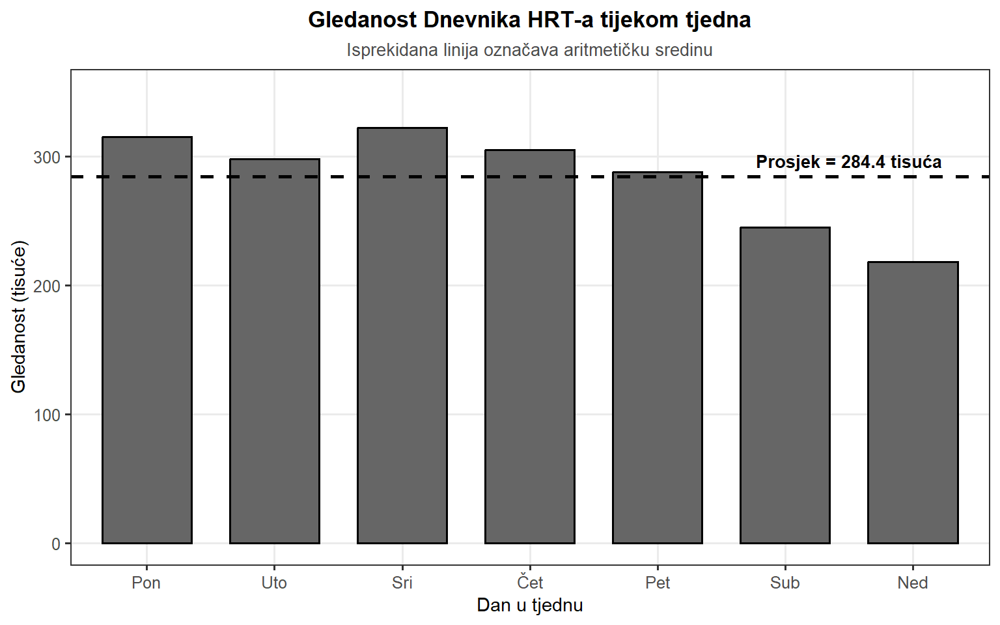
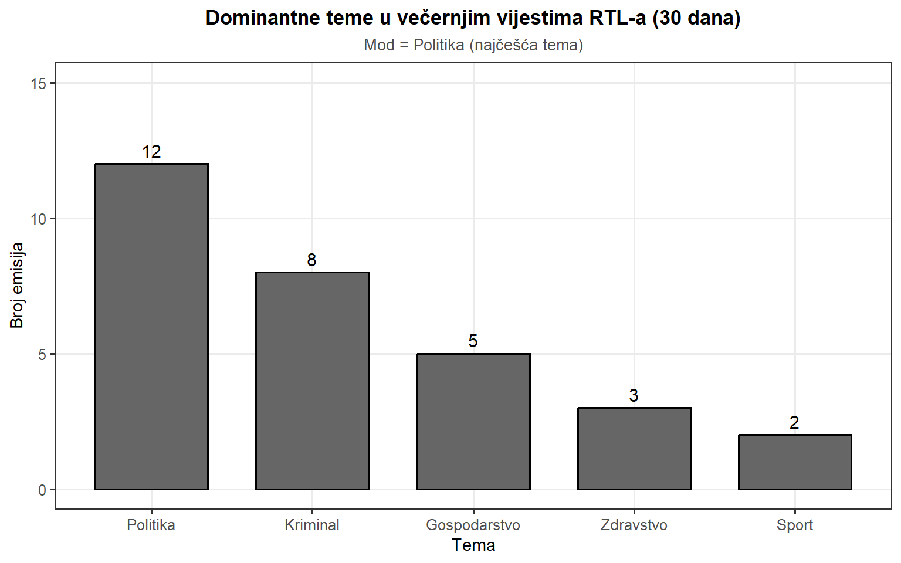
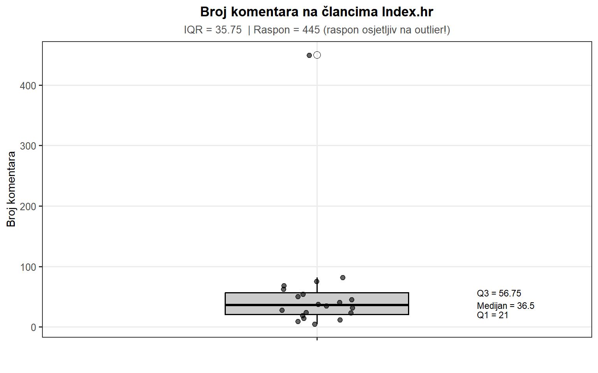
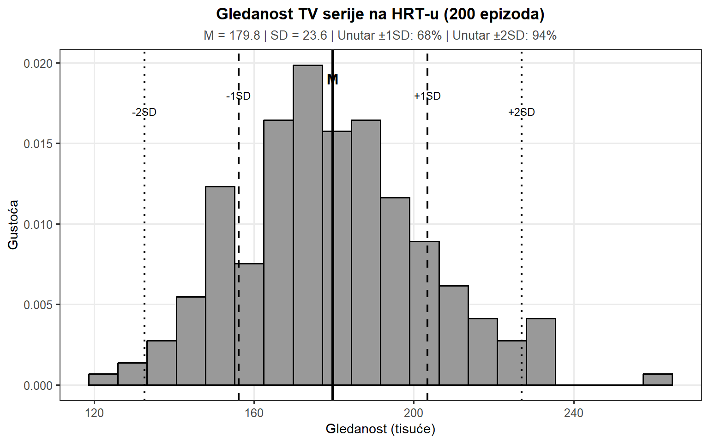
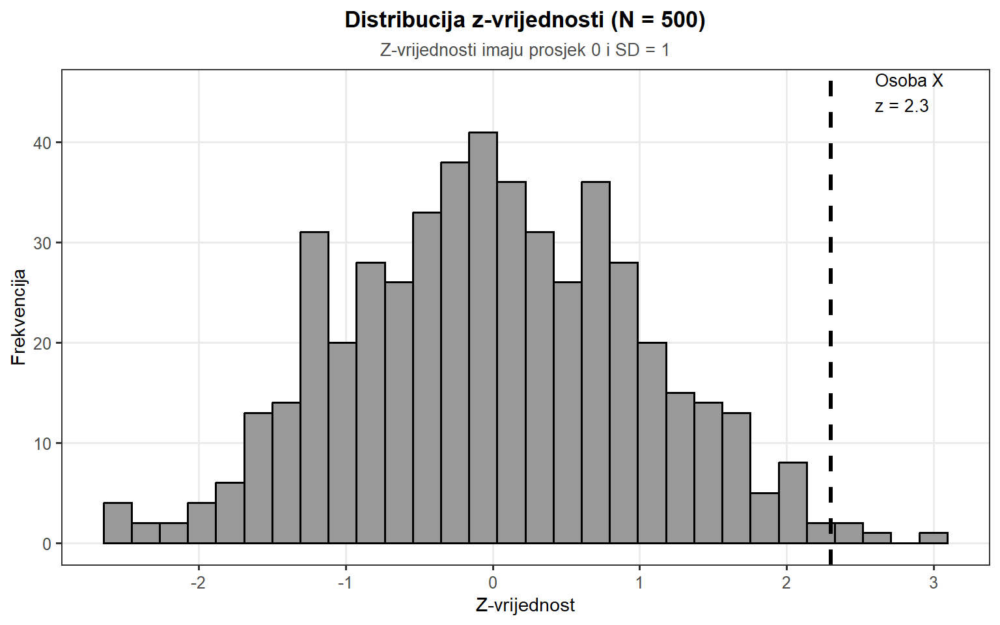
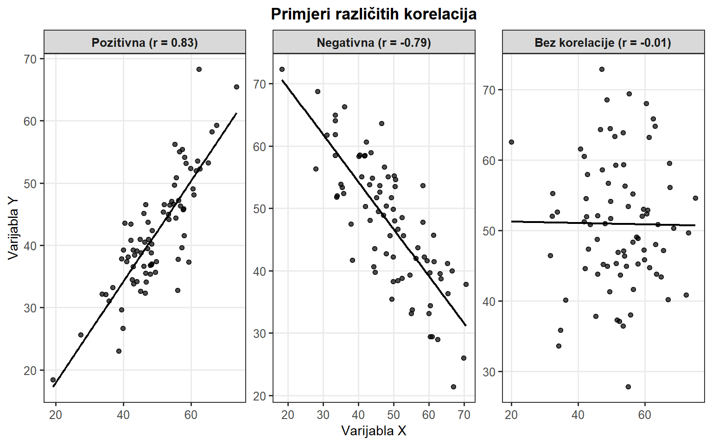
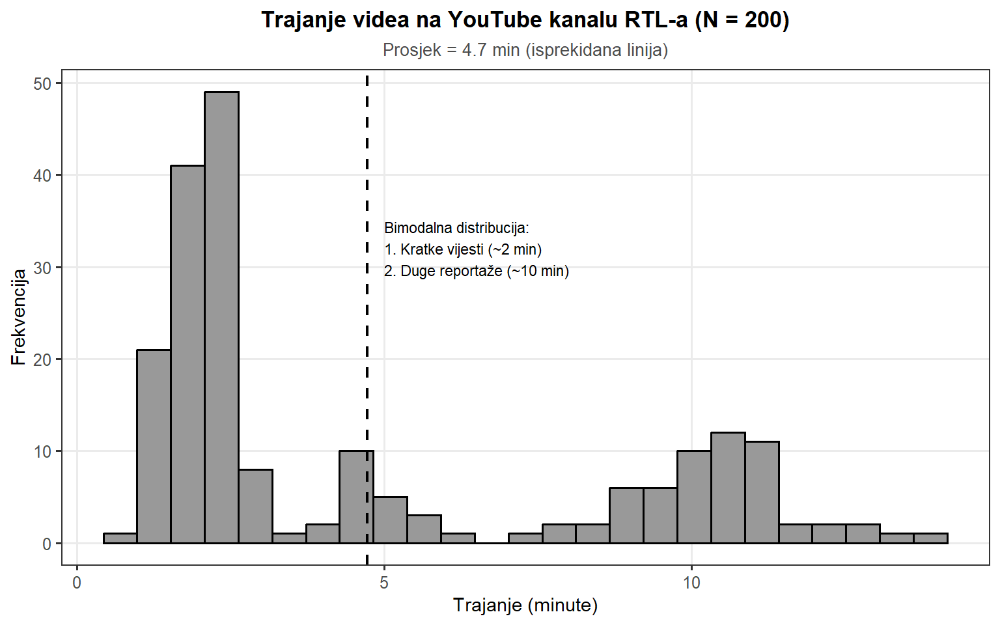
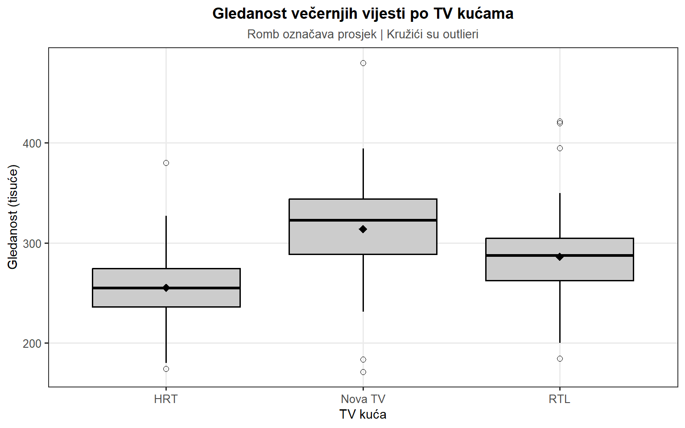
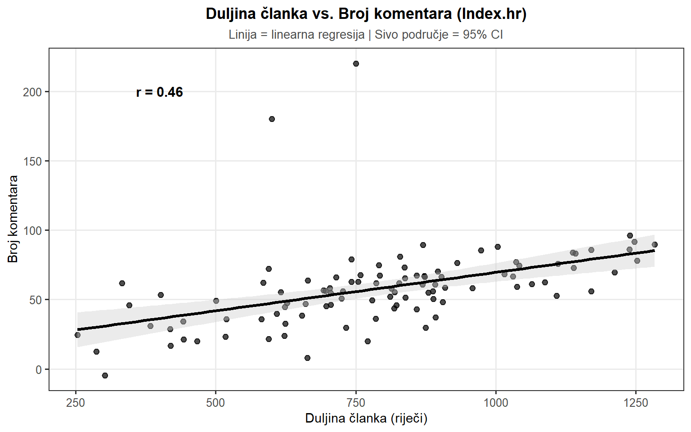
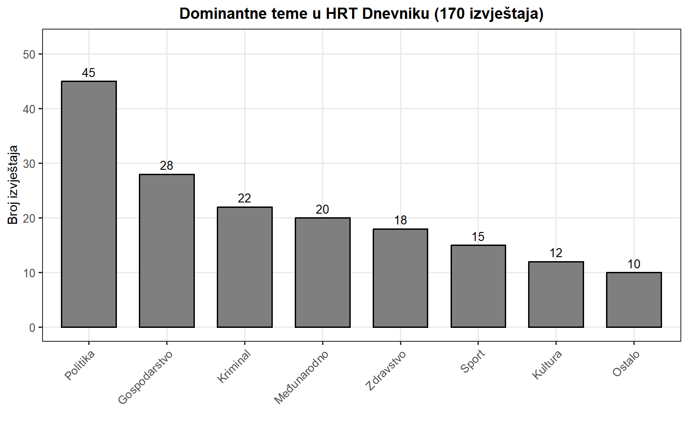

Deskriptivna statistika
Deskriptivna statistika
Prikupljanje podataka kvantitativnim metodama istraživanja, bilo da se radi o anketnim istraživanjima ili o analizi sadržaja medijskih objava, rezultira velikim brojem numeričkih vrijednosti koje je potrebno sažeti i interpretirati. Istraživač masovne komunikacije koji prikupi podatke o dnevnoj gledanosti televizijskog programa, broju komentara na novinskom portalu ili trajanju videa na YouTube kanalu, suočava se s izazovom pretvaranja tih sirovih podataka u smislene zaključke. Lista od stotinu ili tisuću brojki sama po sebi ne govori mnogo – potrebni su nam alati koji će tu masu informacija pretvoriti u razumljive uvide. Upravo je to zadaća deskriptivne statistike – skupa statističkih tehnika kojima se prikupljeni podaci sažimaju, organiziraju i prezentiraju na način koji omogućuje njihovo razumijevanje i interpretaciju.
Deskriptivna statistika razlikuje se od inferencijalne statistike po tome što ne pokušava donositi zaključke o široj populaciji na temelju uzorka, već jednostavno opisuje podatke koje imamo pred sobom. Dok inferencijalna statistika koristi uzorak da bi procijenila karakteristike populacije i testirala hipoteze, deskriptivna statistika fokusira se na pitanja poput: koja je prosječna vrijednost u našim podacima? Koliko su podaci raspršeni? Postoje li neuobičajene vrijednosti? Kakav je odnos između dviju varijabli? Odgovori na ova pitanja čine temelj svake statističke analize i nužni su preduvjet za bilo kakve naprednije analize.
Deskriptivna statistika obuhvaća dvije temeljne skupine mjera. Prva skupina su mjere centralne tendencije koje odgovaraju na pitanje koja je “tipična” ili “središnja” vrijednost u skupu podataka. Druga skupina su mjere disperzije ili varijabilnosti koje kvantificiraju koliko su podaci raspršeni oko te središnje vrijednosti. Ove dvije vrste mjera komplementarne su i gotovo se uvijek koriste zajedno – sama informacija o prosječnoj vrijednosti bez podatka o varijabilnosti pruža nepotpunu sliku o podacima. Primjerice, tvrdnja da je prosječna gledanost programa 500.000 gledatelja ima potpuno različito značenje ako je standardna devijacija 10.000 (konzistentna gledanost) nasuprot 200.000 (visoko varijabilna gledanost).
Osim toga, deskriptivna statistika uključuje tehnike za ispitivanje odnosa između varijabli, među kojima su najvažnije standardizacija rezultata i korelacijska analiza. Standardizirani rezultati omogućuju usporedbu vrijednosti mjerenih na različitim skalama, dok korelacije kvantificiraju jačinu i smjer linearnog odnosa između dviju varijabli. Konačno, vizualizacija podataka predstavlja ključnu komponentu deskriptivne statistike – grafički prikazi omogućuju intuitivnije razumijevanje distribucija i obrazaca u podacima nego što to omogućuju same numeričke statistike, a ponekad otkrivaju obrasce koji bi inače ostali skriveni.
U kontekstu istraživanja masovne komunikacije, deskriptivna statistika ima posebnu važnost. Analiza gledanosti televizijskih programa, posjećenosti internetskih portala, angažmana na društvenim mrežama ili distribucije tema u medijskom sadržaju – sve ove aktivnosti zahtijevaju solidno poznavanje deskriptivne statistike. Istraživač koji ne razumije razliku između aritmetičke sredine i medijana može donijeti pogrešne zaključke o “tipičnoj” gledanosti programa. Analitičar koji ignorira standardnu devijaciju može propustiti uvid da je publika jednog portala konzistentna dok je publika drugog visoko varijabilna. Netko tko ne vizualizira podatke prije izračunavanja korelacije može propustiti nelinearni odnos koji Pearsonov koeficijent ne detektira. Stoga je ovladavanje tehnikama deskriptivne statistike nužan preduvjet za kompetentno istraživanje u području masovne komunikacije.
Mjere centralne tendencije
Mjere centralne tendencije statistički su pokazatelji koji iz mnoštva brojki izvlače jednu reprezentativnu vrijednost koja najbolje opisuje “središte” podataka. Zamislimo da analiziramo podatke o dnevnoj gledanosti večernjeg Dnevnika HRT-a tijekom jednog mjeseca. Urednica programa pregledava brojke i vidi vrijednosti koje variraju od dana do dana – ponekad emisiju prati 320.000 gledatelja, ponekad 280.000, a vikendom brojka pada na oko 210.000. Pred njom je lista od trideset različitih brojki, i potreban joj je način da te podatke sažme u nešto razumljivo. Želi odgovoriti na prividno jednostavno pitanje: kolika je “tipična” gledanost Dnevnika? Međutim, što točno znači “tipična” u ovom kontekstu? Trebamo li gledati najčešću vrijednost, sredinu skupa podataka, ili nešto treće?
Ovaj problem predstavlja srž onoga čime se bave mjere centralne tendencije. Kada istraživač masovne komunikacije prikuplja podatke, bilo da se radi o gledanosti televizijskog programa, broju komentara na novinskom portalu ili trajanju videa na YouTube kanalu, gotovo uvijek se suočava s istim izazovom. Sirovi podaci sami po sebi rijetko govore jasnu priču – previše je informacija da bismo ih sve mogli držati u glavi odjednom, a njihovo jednostavno nabrajanje ne pomaže u razumijevanju onoga što nam podaci pokušavaju reći. Potreban nam je način da kondenziramo te podatke u nekoliko ključnih brojki koje će pružiti brz i informativan uvid.
Postoje tri glavne mjere centralne tendencije koje se koriste u istraživanju medija: aritmetička sredina, medijan i mod. Svaka od njih odgovara na pitanje “koja je tipična vrijednost” na različit način, a svaka ima svoje prednosti i nedostatke ovisno o vrsti podataka s kojima radimo i o tome što pokušavamo saznati.
Aritmetička sredina
Aritmetička sredina najpoznatija je mjera centralne tendencije, poznata i kao “prosjek”. Izračunava se zbrajanjem svih vrijednosti i dijeljenjem s brojem opservacija. Označava se simbolom \(\bar{X}\) (čita se “iks bar”) i formalno se definira kao:
\[\bar{X} = \frac{1}{N}\sum_{i=1}^{N}X_i = \frac{X_1 + X_2 + ... + X_N}{N}\]
gdje je \(N\) broj opservacija, a \(X_i\) označava pojedina opažanja u skupu podataka. Simbol \(\sum\) (velika grčka slova sigma) označava sumaciju, odnosno zbrajanje. Izraz \(\sum_{i=1}^{N}X_i\) doslovno znači “zbroji sve vrijednosti \(X_i\) počevši od \(i=1\) pa sve do \(i=N\)”. Ova formula samo je formalan način zapisivanja onoga što intuitivno razumijemo: zbroji sve opažene vrijednosti i podijeli ih s ukupnim brojem opažanja.
Za primjer, pretpostavimo da imamo podatke o gledanosti Dnevnika HRT-a za jedan tjedan: 315.000 gledatelja u ponedjeljak, 298.000 u utorak, 322.000 u srijedu, 305.000 u četvrtak, 288.000 u petak, 245.000 u subotu i 218.000 u nedjelju. Prosječna gledanost iznosi:
\[\bar{X} = \frac{315.000 + 298.000 + 322.000 + 305.000 + 288.000 + 245.000 + 218.000}{7} = \frac{1.991.000}{7} \approx 284.429\]
Prosječna gledanost Dnevnika tijekom analiziranog tjedna bila je približno 284.000 gledatelja. Ova brojka istraživaču medija daje brzu informaciju o općoj razini uspješnosti programa, omogućujući usporedbu s drugim tjednima ili konkurentskim programima. Međutim, ona ne govori ništa o konzistentnosti gledanosti – ne znamo jesu li sve vrijednosti bile blizu prosjeka ili su neke bile iznimno visoke a druge iznimno niske. Vidimo da značajna razlika između vikenda (subota i nedjelja) i radnih dana utječe na našu percepciju “tipične” gledanosti.
Aritmetička sredina ima važno svojstvo – predstavlja svojevrsno “težište” podataka. Ako bismo zamislili histogram naših podataka kao čvrst objekt, aritmetička sredina bila bi točka na kojoj bismo mogli balansirati taj objekt. U tom smislu, aritmetička sredina ima dublje matematičko značenje – to je vrijednost oko koje su podaci “centralizirani”, vrijednost od koje su ukupna odstupanja prema dolje i ukupna odstupanja prema gore u ravnoteži.
Međutim, upravo ovo svojstvo čini je osjetljivom na ekstremne vrijednosti (outliere). Ako u podacima postoji jedan iznimno atipičan dan (npr. dan kada je emitiran poseban prilog o nekom vrlo popularnom događaju), ta vrijednost će značajno utjecati na prosjek. Aritmetička sredina koristi sve informacije koje imamo – ne zanemaruje nijednu opservaciju – što može biti velika prednost kada radimo s manjim brojem podataka, ali istovremeno znači da smo osjetljivi na ekstremne vrijednosti koje možda ne reprezentiraju uobičajenu situaciju.
Medijan
Medijan je mjera centralne tendencije koja predstavlja srednju vrijednost kada sve podatke poredamo od najmanjeg prema najvećem. Koncept medijana možda je još intuitivniji od aritmetičke sredine. Zamislimo da imamo podatke o dnevnom broju objava na Facebook stranici Jutarnjeg lista tijekom jednog tjedna: 12, 8, 15, 10, 9, 14, 11 objava. Da bismo pronašli medijan, najprije moramo sortirati ove brojeve u rastući niz: 8, 9, 10, 11, 12, 14, 15. Sada je očito da je srednja vrijednost 11 objava, jer se ona nalazi točno u sredini – tri vrijednosti su manje od nje, a tri su veće.
Za razliku od aritmetičke sredine, medijan nije osjetljiv na ekstremne vrijednosti jer koristi samo informaciju o poziciji vrijednosti u sortiranom nizu, ne njihovu stvarnu veličinu. Medijan jednostavno “ignorira” koliko su ekstremne krajnje vrijednosti – on gleda samo koja vrijednost dijeli podatke na dva jednaka dijela.
Formalno, za skup od \(N\) opservacija sortiranih u rastući niz, medijan se definira kao:
\[\text{Medijan} = \begin{cases} X_{(N+1)/2} & \text{ako je } N \text{ neparan broj}\\ \frac{X_{N/2} + X_{(N/2)+1}}{2} & \text{ako je } N \text{ paran broj} \end{cases}\]
Kada imamo paran broj opservacija, medijan nije samo jedna vrijednost iz našeg skupa podataka, već prosjek dviju srednjih vrijednosti.
Razmotrimo primjer s HRT Playerom gdje analiziramo broj pregleda za deset najpopularnijih emisija prošlog mjeseca. Većina emisija ima između 15.000 i 25.000 pregleda, ali jedna emisija – ekskluzivni intervju s vrlo popularnom javnom osobom – ima čak 180.000 pregleda. Podaci sortirani od najmanjeg prema najvećem: 14.000, 16.000, 18.000, 19.000, 22.000, 23.000, 24.000, 26.000, 28.000 i 180.000.

Ako izračunamo aritmetičku sredinu, dobivamo: \((14.000 + 16.000 + 18.000 + 19.000 + 22.000 + 23.000 + 24.000 + 26.000 + 28.000 + 180.000) / 10 = 37.000\) pregleda. Ova brojka stvara dojam da je “tipična” emisija daleko popularnija nego što zapravo jest.
Medijan se izračunava kao prosjek pete i šeste vrijednosti (jer imamo paran broj opservacija): \((22.000 + 23.000) / 2 = 22.500\) pregleda. Ovaj rezultat daleko bolje odražava tipičnu gledanost na platformi jer potpuno ignorira činjenicu da postoji jedna emisija s 180.000 pregleda. Medijan nam govori da polovina emisija ima manje od 22.500 pregleda, a polovina više.
Medijan je stoga posebno koristan kada: podaci sadrže ekstremne vrijednosti (outliere), distribucija podataka je asimetrična, želimo znati “tipičnu” vrijednost koja nije pod utjecajem ekstremnih slučajeva, ili kada koristimo ordinalne podatke gdje numeričke vrijednosti možda nisu smislene za izračunavanje prosjeka.
Za istraživača masovne komunikacije, izbor između aritmetičke sredine i medijana ovisi o prirodi podataka i o tome što želimo saznati. Ako nas zanima ukupna količina angažmana ili ukupni “teret” nekog fenomena, aritmetička sredina može biti prava mjera. Međutim, ako nas zanima što je “tipično” za većinu slučajeva, a posebno ako sumnjamo na prisutnost ekstremnih vrijednosti, medijan je često bolji izbor. U praksi, iskusni istraživači često izvještavaju obje mjere jer svaka otkriva drugačiji aspekt podataka.
Mod
Mod je najjednostavnija mjera centralne tendencije za definirati – to je vrijednost koja se pojavljuje najčešće u skupu podataka. Za razliku od aritmetičke sredine i medijana koji zahtijevaju numeričke podatke i računanje, mod se može primijeniti na bilo koju vrstu podataka, uključujući i kategorijske (nominalne) podatke. Ova karakteristika čini mod posebno korisnim u istraživanjima masovne komunikacije gdje često radimo s nominalnim mjerilima.
Razmotrimo konkretan primjer. Analitičar sadržaja istražuje dominantne teme u večernjim vijestima RTL-a tijekom mjeseca dana. Za svaku emisiju zabilježio je koja je tema dominirala taj dan. Podaci pokazuju sljedeću distribuciju: politika se pojavila kao dominantna tema 12 puta, gospodarstvo 5 puta, kriminal 8 puta, zdravstvo 3 puta, a sport 2 puta. U ovom slučaju, mod je “politika”, jer se ta kategorija pojavljuje najčešće. Valja napomenuti da ovdje ne možemo izračunati aritmetičku sredinu niti medijan – pojmovi kao što je “prosjek” između politike i gospodarstva jednostavno nemaju smisla za nominalne podatke. Međutim, mod nam daje korisnu informaciju: najčešća tema u analiziranom periodu bila je politika.

Mod je jednako koristan i za numeričke podatke, osobito u situacijama gdje nas zanima “najvjerojatnija” pojedinačna vrijednost. Zamislimo da analiziramo trajanje video clipova na YouTube kanalu popularne hrvatske medijske kuće. Iako postoji velika varijabilnost u trajanju videa (od 30 sekundi do 15 minuta), primjećujemo da određene duljine prevladavaju. Pretpostavimo da smo analizirali sto videa i dobili sljedeću distribuciju: 35 videa traje 2 minute, 20 videa traje 3 minute, 15 videa traje 1 minutu, 12 videa traje 5 minuta, 10 videa traje 4 minute, a ostalih 8 videa ima različita druga trajanja. U ovom slučaju, mod je 2 minute, jer se ta vrijednost pojavljuje u čak 35 od 100 slučajeva. Ova informacija može biti vrijedna za razumijevanje uređivačke politike – očito postoji jaka preferencija za videima koji traju točno 2 minute.
Zanimljivo je primijetiti da, za razliku od aritmetičke sredine i medijana koje uvijek imaju samo jednu vrijednost, skup podataka može imati više modova. Ako se dvije ili više vrijednosti pojavljuju jednako često i češće od svih ostalih, tada govorimo o bimodalnoj (dva moda) ili multimodalnoj (više modova) distribuciji. Takve situacije mogu biti vrlo informativne. Na primjer, ako analiza duljine članaka na nekom portalu pokazuje da postoje dva moda – jedan oko 300 riječi i drugi oko 1200 riječi – to može ukazivati na postojanje dviju različitih vrsta sadržaja: kratkih vijesti i dugačkih analitičkih članaka. Ovakav uvid mogao bi promaknuti kada bismo gledali samo aritmetičku sredinu.
Međutim, valja biti svjestan i ograničenja moda. Mod može biti vrlo nestabilan, osobito kada radimo s kontinuiranim podacima gdje se svaka vrijednost pojavljuje samo jednom ili nekoliko puta. Osim toga, mod nam ne govori ništa o “sredini” distribucije u širem smislu – samo nam govori koja je vrijednost najčešća. U nekim slučajevima, mod može biti prilično udaljen od onoga što bismo intuitivno smatrali “tipičnom” vrijednošću. Stoga se mod u praksi istraživanja medija često koristi u kombinaciji s drugim mjerama centralne tendencije.
Izbor odgovarajuće mjere
Izbor odgovarajuće mjere centralne tendencije ovisi o tri ključna čimbenika: vrsti podataka, distribuciji tih podataka i istraživačkom pitanju na koje želimo odgovoriti.
Vrsta podataka predstavlja prvi i najvažniji kriterij. Za nominalne podatke – kategorije bez inherentnog redoslijeda kao što su vrsta medija (televizija, radio, novine, internet) ili žanr sadržaja (vijesti, zabava, sport, kultura) – jedino je mod smislena opcija. Pojmovi kao što su “prosjek” ili “sredina” nemaju značenje kada govorimo o kategorijama koje nemaju numeričku vrijednost.
Za ordinalne podatke – kategorije koje imaju prirodni redoslijed ali ne i jednake intervale između njih – preferira se medijan. Primjer ordinalnih podataka u komunikološkom istraživanju bile bi ocjene na Likertovoj skali gdje ispitanici procjenjuju koliko često prate vijesti: “nikada” (1), “rijetko” (2), “ponekad” (3), “često” (4), “uvijek” (5). Medijan koristi samo informaciju o redoslijedu vrijednosti, što ga čini prikladnim za ordinalne podatke. Međutim, u praksi istraživanja medija mnogi istraživači ipak izvještavaju aritmetičke sredine Likertovih skala, što je predmet kontinuirane metodološke debate.
Za intervalne i omjerne podatke – podatke s numeričkim vrijednostima i smislenim intervalima ili omjerima – imamo najveću fleksibilnost. Ako je distribucija podataka relativno simetrična i bez ekstremnih outliera, preferira se aritmetička sredina jer koristi sve informacije u podacima i ima bolja matematička svojstva. Međutim, ako distribucija pokazuje asimetriju ili sadrži ekstremne vrijednosti, medijan može pružiti vjerodostojniju sliku o “tipičnoj” vrijednosti.
Razmotrimo konkretni primjer koji ilustrira ovaj izbor. Analitičar istražuje učinkovitost društvenih mreža za promociju sadržaja portala Index.hr. Prikupio je podatke o broju klikova koje je generirala stotina Facebook objava tijekom mjeseca. Većina objava generirala je između 500 i 2000 klikova, što odražava uobičajenu razinu angažmana. Međutim, tri objave su postale viralne i generirale su 45.000, 52.000 i 68.000 klikova. Ako izračunamo aritmetičku sredinu, te tri viralane objave značajno povećavaju prosjek, možda na 3500 klikova. Ova brojka stvara pogrešan dojam o tome što portal može “tipično” očekivati od Facebook promocije. S druge strane, medijan bi bio možda oko 1200 klikova, što bolje odražava uobičajeni scenarij. U ovoj situaciji, iskusni istraživač bi vjerojatno izvijestio obje vrijednosti, objašnjavajući da je medijan bolji pokazatelj “tipične” uspješnosti, dok aritmetička sredina odražava ukupni prosjek uključujući rijetke ali vrlo uspješne objave.
U praksi kvalitetnog istraživanja masovne komunikacije, često je korisno izvijestiti više mjera centralne tendencije jer svaka otkriva različite aspekte podataka. Ne postoji univerzalno “najbolja” mjera – izbor zahtijeva promišljeno razmatranje prirode podataka i istraživačkog konteksta.
| Vrsta podataka | Preporučena mjera | Alternativa | Napomena |
|---|---|---|---|
| Nominalni | Mod | - | Jedina smislena opcija |
| Ordinalni | Medijan | Mod | Aritmetička sredina upitna |
| Intervalni/Omjerni (simetrični) | Aritmetička sredina | Medijan | Obje prihvatljive |
| Intervalni/Omjerni (asimetrični) | Medijan | Aritmetička sredina | Oprez s outlierima |
Mjere disperzije
Mjere centralne tendencije govore samo dio priče o podacima – one pokazuju “sredinu” podataka, ali ne govore ništa o tome koliko su ti podaci raspršeni oko te sredine. Analitičar portala Index.hr koji pregledava podatke o dnevnom broju posjeta stranici tijekom mjeseca primjećuje da je prosječna dnevna posjećenost bila 850.000 korisnika. Ova informacija zvuči korisno, ali kad malo dublje promisli, shvaća da mu nedostaje ključni dio slagalice. Je li portal svaki dan imao približno 850.000 posjeta, što bi ukazivalo na izuzetno stabilnu i predvidivu publiku? Ili možda većinu dana imaju oko 600.000 posjeta, ali ponekad dosegnu i 1.500.000 kada objave posebno atraktivnu priču? Ova dva scenarija imaju potpuno različite implikacije za razumijevanje publike i planiranje sadržaja, iako oba imaju identičan prosjek.
Upravo u ovom trenutku postaju neophodne mjere disperzije ili mjere varijabilnosti. Ove statističke mjere kvantificiraju koliko su podaci “rasprostranjeni”, odnosno koliko tipično odstupaju od središnje vrijednosti. Za istraživača masovne komunikacije, ova informacija može biti jednako važna, ako ne i važnija, od samog prosjeka. Postoje četiri glavne mjere disperzije: raspon, međukvartilni raspon, varijanca i standardna devijacija.
Raspon
Raspon je najjednostavnija mjera disperzije – razlika između maksimalne i minimalne vrijednosti u skupu podataka. Ako analitičar istražuje trajanje televizijskih reklama na HRT-u i utvrdi da najkraća reklama traje 10 sekundi, a najdulja 90 sekundi, raspon iznosi \(90 - 10 = 80\) sekundi. Ova brojka odmah daje osjećaj koliko velika je disperzija u trajanju reklama.
Privlačnost raspona leži u njegovoj jednostavnosti – ne može biti lakše za izračunati, a interpretacija je potpuno jasna. Međutim, upravo ta jednostavnost krije ozbiljan nedostatak. Pretpostavimo da analiziramo sto reklama i da devedeset i devet njih traje između 25 i 35 sekundi, što ukazuje na izuzetno konzistentno trajanje. Međutim, postoji jedna iznimna reklama – možda poseban promotivni spot – koja traje 90 sekundi. Raspon cijelog skupa podataka i dalje će biti 80 sekundi, što stvara dojam velike varijabilnosti, iako je 99% reklama u vrlo uskom rasponu.
Ovaj primjer ilustrira ključni problem s rasponom: on je potpuno nerobusna mjera koja je izuzetno osjetljiva na outliere. Potrebna je samo jedna ekstremna vrijednost da bi raspon dao potpuno iskrivljenu sliku o disperziji podataka. Osim toga, raspon koristi samo dvije vrijednosti iz cijelog skupa podataka – najveću i najmanju – potpuno ignorirajući sve ostale informacije.
Međukvartilni raspon (IQR)
Međukvartilni raspon (IQR) elegantno rješava problem osjetljivosti na outliere. Umjesto da gleda razliku između apsolutnih ekstrema, IQR gleda razliku između vrijednosti koje su “prilično visoke” i “prilično niske” – konkretno, između trećeg i prvog kvartila.
Kvartili dijele sortiran skup podataka na četiri jednaka dijela. Prvi kvartil (\(Q_1\) ili 25. percentil) je vrijednost takva da se 25% podataka nalazi ispod nje, a 75% iznad nje. Treći kvartil (\(Q_3\) ili 75. percentil) je vrijednost takva da se 75% podataka nalazi ispod nje, a 25% iznad nje. Medijan je zapravo drugi kvartil (\(Q_2\) ili 50. percentil). Međukvartilni raspon definira se kao:
\[IQR = Q_3 - Q_1\]
Vratimo se primjeru s Index.hr portalom. Pretpostavimo da analitičar istražuje broj komentara na člancima objavljenim tijekom mjeseca. Prikupio je podatke za dvadeset članaka i sortirao ih: 5, 8, 12, 15, 18, 22, 25, 28, 32, 35, 38, 42, 45, 50, 55, 62, 68, 75, 82, 450. Primjećujemo da posljednji članak ima neobično velik broj komentara (450) – očito se radi o kontroverznoj temi koja je potakla veliku raspravu.

Ako bismo izračunali raspon, dobili bismo \(450 - 5 = 445\) komentara, što daje iskrivljenu sliku jer većina članaka ima daleko manje komentara. Međukvartilni raspon pristupa problemu drugačije. Prvi kvartil \(Q_1\) je oko 20 komentara, treći kvartil \(Q_3\) je oko 60 komentara. \(IQR = 60 - 20 = 40\) komentara. Ova brojka nam govori da “srednja polovica” članaka varira za oko 40 komentara. Mjera je potpuno ignorirala članak s 450 komentara, dajući realističniju sliku o varijabilnosti “tipičnih” članaka.
IQR je stoga idealan izbor kada radimo s podacima koji sadrže outliere – što je česta situacija u analizi medijskih podataka gdje nailazimo na viralane objave, iznimno popularne članke ili druge ekstremne slučajeve.
Varijanca i standardna devijacija
Varijanca pristupa mjerenju disperzije na fundamentalno drugačiji način – uzima u obzir sve opservacije i mjeri koliko svaka od njih odstupa od prosjeka. Razmotrimo sljedeći scenarij. Analitičar istražuje gledanost pet epizoda televizijske serije na HRT-u: 180.000, 165.000, 195.000, 170.000 i 190.000 gledatelja.
Prvi korak je izračunati aritmetičku sredinu: \(\bar{X} = 180.000\) gledatelja. Zatim za svaku epizodu izračunavamo koliko odstupa od prosjeka i to odstupanje kvadriramo (kako bi se eliminirali negativni predznaci):
| Epizoda | Gledatelji | Odstupanje | Kvadrirano odstupanje |
|---|---|---|---|
| 1 | 180.000 | 0 | 0 |
| 2 | 165.000 | -15.000 | 225.000.000 |
| 3 | 195.000 | 15.000 | 225.000.000 |
| 4 | 170.000 | -10.000 | 100.000.000 |
| 5 | 190.000 | 10.000 | 100.000.000 |
Varijanca je tada prosjek ovih kvadriranih odstupanja:
\[s^2 = \frac{1}{N-1}\sum_{i=1}^{N}(X_i - \bar{X})^2\]
Dijeljenje s \(N-1\) umjesto \(N\) koristi se jer se u istraživanjima obično radi s uzorkom koji reprezentira veću populaciju, a ova korekcija (tzv. Besselova korekcija) osigurava nepristrani procjenitelj populacijske varijance.
Za naš primjer: \(s^2 = (0 + 225.000.000 + 225.000.000 + 100.000.000 + 100.000.000) / 4 = 162.500.000\). Varijanca gledanosti je 162,5 milijuna. Ali 162,5 milijuna čega? Ovdje nailazimo na fundamentalni problem s varijancom: izražena je u kvadratnim jedinicama izvorne varijable. Ako mjerimo gledatelje, varijanca je u “gledatelji na kvadrat”, što nema nikakvo realno značenje i čini varijancu gotovo nemogućom za izravnu interpretaciju.
Unatoč ovom problemu, varijanca je matematički fundamentalna i ima izvrsna svojstva koja je čine temeljem gotovo svih naprednih statističkih metoda. Ona je aditivna (varijance nezavisnih varijabli se mogu zbrajati), diferencijabilna, i elegantno se ponaša u teorijskim razmatranjima.
Standardna devijacija rješava problem neinterpretabilnosti varijance uzimanjem kvadratnog korijena varijance:
\[s = \sqrt{\frac{1}{N-1}\sum_{i=1}^{N}(X_i - \bar{X})^2}\]
Za naš primjer gledanosti serije: \(s = \sqrt{162.500.000} \approx 12.748\) gledatelja. Sada imamo broj koji možemo razumjeti i komunikirati: standardna devijacija gledanosti je približno 12.750 gledatelja. Ovo je mjera “tipičnog” odstupanja od prosječne gledanosti.
Za interpretaciju standardne devijacije koristi se empirijsko pravilo (pravilo 68-95-99.7) koje vrijedi za približno simetrične, zvonoliko oblikovane distribucije:
- Približno 68% podataka pada u raspon \(\bar{X} \pm 1s\) (sredina ± 1 standardna devijacija)
- Približno 95% podataka pada u raspon \(\bar{X} \pm 2s\) (sredina ± 2 standardne devijacije)
- Približno 99.7% podataka pada u raspon \(\bar{X} \pm 3s\) (sredina ± 3 standardne devijacije)

Primijenimo ovo pravilo na naš primjer s gledanošću serije. Prosječna gledanost bila je 180.000, a standardna devijacija 12.750 gledatelja. Prema empirijskom pravilu, očekujemo da oko 68% epizoda ima gledanost između \(180.000 - 12.750 = 167.250\) i \(180.000 + 12.750 = 192.750\) gledatelja. Gotovo sve epizode (99.7%) trebale bi imati gledanost između \(180.000 - 3 \times 12.750 = 141.750\) i \(180.000 + 3 \times 12.750 = 218.250\) gledatelja. Epizoda s gledanošću izvan ovog raspona predstavljala bi statistički neuobičajan slučaj.
Standardna devijacija ima posebnu vrijednost za usporedbe. Zamislimo da uspoređujemo dva portala. Portal A ima prosječno 50.000 posjeta dnevno sa standardnom devijacijom od 5.000, dok portal B također ima prosječno 50.000 posjeta, ali sa standardnom devijacijom od 25.000. Iako oba portala imaju isti prosjek, portal A pokazuje daleko konzistentniju posjećenost – većina dana posjete su u relativno uskom rasponu. Portal B pokazuje veliku varijabilnost – neki dani su vrlo slabi, drugi izuzetno jaki. Ova razlika u konzistentnosti može imati važne implikacije za poslovne odluke i razumijevanje publike.
Usporedba mjera disperzije
Usporedba mjera disperzije pokazuje da svaka ima svoje prednosti i nedostatke. Robusnost na outliere najvažnija je razlika: raspon i varijanca/standardna devijacija osjetljive su na ekstremne vrijednosti, dok je IQR vrlo robustan. Raspon i IQR koriste samo nekoliko vrijednosti iz skupa podataka, dok varijanca i standardna devijacija koriste sve opservacije. Standardna devijacija ima najbolju kombinaciju interpretabilnosti i matematičkih svojstava.
| Mjera | Robusnost na outliere | Koristi sve podatke | Interpretabilnost | Koristi se za |
|---|---|---|---|---|
| Raspon | Vrlo slaba | Ne (samo 2 vrijednosti) | Visoka | Brzi uvid u ekstreme |
| IQR | Vrlo jaka | Ne (samo kvartili) | Visoka | Podaci s outlierima |
| Varijanca | Slaba | Da | Niska (kvadratne jedinice) | Teorijske analize |
| Standardna devijacija | Slaba | Da | Visoka | Univerzalna mjera |
Parovanje mjera centralne tendencije i disperzije prirodno slijedi njihova svojstva. Aritmetička sredina uvijek se izvještava zajedno sa standardnom devijacijom jer obje koriste sve podatke i obje su osjetljive na outliere. Medijan se izvještava s međukvartilnim rasponom jer obje mjere koriste informacije o poziciji vrijednosti i obje su robusne na outliere.
Primjer ispravnog izvještavanja: “Prosječan broj objava na dan bio je \(M = 12.5\) (\(SD = 3.2\))” ili “Medijan broja komentara bio je \(Mdn = 45\) (\(IQR = 23\))”. U društvenim znanostima općenito je dovoljno izvijestiti rezultate na dvije decimale. Brojke se uvijek trebaju kontekstualizirati – primjerice: “Prosječna dnevna posjećenost portala bila je 850.000 korisnika (\(SD = 120.000\)), što ukazuje na relativno konzistentnu publiku s varijacijom od približno 14% oko prosjeka.”
Standardizirani rezultati i korelacije
Dosad razmatrane mjere opisuju pojedinačne varijable – njihovu središnju vrijednost i disperziju. Međutim, u istraživanju masovne komunikacije rijetko nas zanima samo jedna izolirana varijabla. Umjesto toga, gotovo uvijek želimo razumjeti odnose između varijabli. Je li veći angažman na društvenim mrežama povezan s većom lojalnošću brendu? Postoji li veza između duljine članka i broja komentara? Kako se gledanost različitih programa povezuje međusobno? Ova pitanja zahtijevaju da prijeđemo s univarijatne (jedne varijable) na bivarijatnu (dvije varijable) analizu.
Z-vrijednosti
Standardizirani rezultat (z-vrijednost) definira se kao broj standardnih devijacija za koji određena opservacija odstupa od prosjeka. Zamislimo da istraživač razvija novi upitnik za mjerenje “sklonosti dijeljenju dezinformacija” na društvenim mrežama. Upitnik sadrži 40 pitanja, a sudionici odgovaraju na skali od 1 do 5 za svako pitanje, što znači da ukupan rezultat može varirati od 40 do 200. Nakon provedbe istraživanja na uzorku od 10.000 korisnika, prosječan rezultat je 110 sa standardnom devijacijom od 15. Osoba koja dobije rezultat od 145 – kako bismo trebali interpretirati taj rezultat?
Jedan pristup bio bi reći da je osoba postigla 72.5% maksimalnog mogućeg rezultata (145/200). Međutim, ovaj pristup ne uzima u obzir kako se zapravo ponašaju drugi ljudi. Bolji pristup je usporediti osobu s distribucijom rezultata u populaciji, što nam omogućuje formula za z-vrijednost:
\[z_i = \frac{X_i - \bar{X}}{s}\]
gdje je \(X_i\) sirova vrijednost, \(\bar{X}\) aritmetička sredina, a \(s\) standardna devijacija. Za našu osobu: \(z = (145 - 110) / 15 = 2.33\). Ova osoba je 2.33 standardne devijacije iznad prosjeka, što prema empirijskom pravilu znači da je u gornjih približno 1% populacije.

Z-vrijednosti imaju dva ključna svojstva. Prvo, distribucija z-vrijednosti uvijek ima prosjek 0 i standardnu devijaciju 1, bez obzira kakva je bila originalna distribucija. Kada od svake vrijednosti oduzmemo prosjek, centriramo distribuciju oko nule; kada podijelimo sa standardnom devijacijom, skaliramo je tako da standardna devijacija postane 1.
Drugo, z-vrijednosti omogućuju usporedbu između varijabli mjerenih na potpuno različitim skalama. Broj dnevnih objava na društvenim mrežama (koji varira od 0 do 20) ne može se direktno usporediti s vremenom provedenim na platformi (koje varira od 0 do 300 minuta). Međutim, ako obje varijable standardiziramo, možemo usporediti relativne pozicije. Osoba A s z-vrijednošću od 1.5 za broj objava i 0.8 za vrijeme provedeno je “neuobičajenija” u broju objava. Osoba B s z-vrijednostima 0.5 i 2.0 je “neuobičajenija” u vremenu provedenom. Ova usporedba bila bi nemoguća sa sirovim rezultatima.
U komunikološkom istraživanju, standardizirani rezultati koriste se za: identifikaciju outliera (članak s z-vrijednošću od 4.5 za broj komentara zaslužuje posebnu pažnju), kreiranje kompozitnih indeksa (kombiniranje broja lajkova, komentara i dijeljenja u uravnoteženi “indeks angažmana” – ako bismo jednostavno zbrojili sirove brojke, lajkovi bi dominirali indeks samo zato što su na većoj skali), te u naprednim statističkim analizama poput višestruke regresije.
Pearsonov koeficijent korelacije
Pearsonov koeficijent korelacije (\(r\)) kvantificira jačinu i smjer linearnog odnosa između dvije varijable. Prije uvođenja formalne mjere, važno je razumjeti kako vizualno procjenjujemo odnose. Dijagram raspršenja (scatterplot) je osnovni alat – svaka opservacija reprezentirana je kao točka gdje x-koordinata odgovara vrijednosti prve varijable, a y-koordinata vrijednosti druge. Ako točke formiraju obrazac koji ide odozdo lijevo prema gore desno, to sugerira pozitivan odnos: porast jedne varijable tendira biti praćen porastom druge. Ako točke idu od gore lijevo prema dolje desno, to ukazuje na negativan odnos. Ako su točke nasumično raspršene bez jasnog obrasca, to sugerira da nema sistematičnog odnosa.
Koeficijent korelacije varira od -1 do +1, gdje: \(r = +1\) indicira savršenu pozitivnu korelaciju (sve točke leže na pravoj liniji koja raste), \(r = -1\) indicira savršenu negativnu korelaciju (sve točke leže na pravoj liniji koja pada), \(r = 0\) indicira nikakvu linearnu korelaciju.
Da bismo razumjeli kako se korelacija izračunava, moramo uvesti koncept kovarijance – mjere koja kvantificira koliko dvije varijable variraju zajedno:
\[\text{Cov}(X,Y) = \frac{1}{N-1}\sum_{i=1}^{N}(X_i - \bar{X})(Y_i - \bar{Y})\]
Za svaku opservaciju gledamo koliko \(X\) odstupa od svog prosjeka i koliko \(Y\) odstupa od svog prosjeka, a zatim množimo ta odstupanja. Ako obje varijable tendiraju biti iznad prosjeka u isto vrijeme (ili obje ispod), umnožci su pozitivni, što rezultira pozitivnom kovarijancom. Ako jedna tendira biti iznad prosjeka kada je druga ispod, umnožci su negativni.
Međutim, kovarijanca ima problem: njena veličina ovisi o jedinicama mjerenja. Ako mjerimo duljinu članka u riječima i broj komentara, kovarijanca je u “riječi × komentari”, što nema razumljivog značenja. Pearsonov koeficijent korelacije rješava ovaj problem standardizacijom:
\[r_{XY} = \frac{\text{Cov}(X,Y)}{s_X \cdot s_Y}\]
Dijeleći kovarijancu s umnoškom standardnih devijacija, dobivamo bezdimenzionalnu mjeru koja uvijek pada između -1 i +1. Postoji elegantna alternativna formula koja eksplicitno povezuje korelaciju sa z-vrijednostima:
\[r_{XY} = \frac{1}{N-1}\sum_{i=1}^{N}z_{X_i} \cdot z_{Y_i}\]
Korelacija je zapravo prosječan umnožak standardiziranih rezultata. Ova povezanost objašnjava zašto je korelacija standardizirana mjera neovisna o izvornim jedinicama mjerenja.

Za interpretaciju korelacije koriste se opće smjernice:
| Apsolutna vrijednost \(|r|\) | Interpretacija |
|---|---|
| 0.00 - 0.19 | Vrlo slaba ili zanemariva |
| 0.20 - 0.39 | Slaba |
| 0.40 - 0.59 | Umjerena |
| 0.60 - 0.79 | Jaka |
| 0.80 - 1.00 | Vrlo jaka |
Valja naglasiti da konkretna interpretacija ovisi o kontekstu istraživanja. U istraživanju masovne komunikacije, korelacija od \(r = 0.35\) između izloženosti političkim vijestima i političkog znanja mogla bi biti vrlo značajna, dok u istraživanju pouzdanosti mjernog instrumenta, korelacija ispod 0.80 mogla bi ukazivati na ozbiljan problem.
Ograničenja Pearsonove korelacije moraju se razumjeti za pravilnu interpretaciju. Prvo, mjeri samo linearne odnose – ako je odnos između varijabli krivolinijski (npr. obrnuta U krivulja), korelacija može biti blizu nule čak i kada postoji jaka sistematična veza. Drugo, korelacija je osjetljiva na outliere – jedna ekstremna točka može značajno utjecati na vrijednost koeficijenta. Treće, i najvažnije: korelacija ne implicira uzročnost. Ako pronađemo da je vrijeme provedeno na Facebooku korelirano s političkom polarizacijom, to ne znači nužno da Facebook uzrokuje polarizaciju. Moguće je da: Facebook uzrokuje polarizaciju (X → Y), polarizacija uzrokuje veću upotrebu Facebooka (Y → X), treća varijabla uzrokuje oboje (Z → X i Z → Y), ili je odnos slučajan. Za zaključke o uzročnosti potrebni su eksperimentalni dizajni ili napredne kauzalne metode.
Razmotrimo primjer iz komunikološkog istraživanja. Analitičar istražuje odnos između tri varijable vezane uz portal Večernji.hr: dnevni broj objavljenih članaka (\(M = 25.4\), \(SD = 4.2\)), prosječno vrijeme čitanja po članku (\(M = 142\) sekundi, \(SD = 28\)) i ukupan dnevni broj komentara (\(M = 450\), \(SD = 120\)). Korelacijska matrica pokazuje:
| Broj članaka | Vrijeme čitanja | Ukupni komentari | |
|---|---|---|---|
| Broj članaka | 1.00 | -0.32 | 0.15 |
| Vrijeme čitanja | -0.32 | 1.00 | 0.58 |
| Ukupni komentari | 0.15 | 0.58 | 1.00 |
Interpretacija: slaba negativna korelacija (\(r = -0.32\)) između broja članaka i vremena čitanja sugerira da kada portal objavi više članaka, čitatelji provode manje vremena na svakom pojedinačnom. Vrlo slaba korelacija (\(r = 0.15\)) između broja članaka i komentara indicira da broj objava ne predviđa ukupne komentare. Umjereno jaka pozitivna korelacija (\(r = 0.58\)) između vremena čitanja i komentara sugerira da angažiraniji sadržaj koji zadržava čitatelje rezultira većom interakcijom – nalaz koji može imati praktične implikacije za uredničke odluke.
Vizualizacija podataka
Brojke same po sebi rijetko govore dovoljno jasnu priču. Prosječna gledanost od 285.000 gledatelja sa standardnom devijacijom od 42.000 pruža određeni uvid, ali taj uvid postaje daleko moćniji kada ga vizualiziramo. Grafički prikazi mogu otkriti obrasce koje numeričke statistike propuštaju: bimodalne distribucije, outliere, nelinearne odnose ili subgrupe u podacima. Edward Tufte, utjecajni teoretičar vizualizacije, sažeo je ovu ideju jednostavno: “Iznad svega, pokažite podatke.” Četiri temeljne vrste grafova pokrivaju većinu potreba u istraživanju masovne komunikacije.
Histogram
Histogram prikazuje distribuciju pojedinačne numeričke varijable dijeleći raspon vrijednosti na intervale (binove) i prikazujući koliko opservacija pada u svaki interval. Na x-osi nalaze se intervali vrijednosti, a na y-osi frekvencije. Za istraživača masovne komunikacije, histogram je nezamjenjiv alat za razumijevanje kako su podaci distribuirani.
Zamislimo da analiziramo trajanje 200 video clipova na YouTube kanalu RTL-a. Histogram odmah otkriva: jesu li većina videa sličnog trajanja (uska distribucija) ili variraju široko (široka distribucija); postoje li jasne modalne vrijednosti (npr. klaster oko 2 minute za vijesti, drugi oko 15 minuta za reportaže); ima li outliera koji zahtijevaju posebnu pažnju; je li distribucija simetrična ili asimetrična. Histogram koji pokazuje dva jasna vrha (bimodalna distribucija) može otkriti da portal proizvodi dvije distinktivne vrste sadržaja – kratke vijesti i duže reportaže – što je uvid koji bi se izgubio kada bismo gledali samo prosjek i standardnu devijaciju.

Ključ dobrog histograma leži u izboru broja intervala. Premalo intervala stvara grub prikaz koji skriva detalje distribucije, dok previše intervala stvara isprekidan prikaz gdje svaki bin sadrži samo nekoliko opservacija. Preporuka je eksperimentirati s različitim brojevima binova dok se ne pronađe prikaz koji najbolje komunicira oblik distribucije. Kao opće pravilo, za uzorke od 50-100 opservacija obično je prikladno 7-10 intervala, dok veći uzorci mogu koristiti više intervala.
Box plot
Box plot (dijagram pravokutnika) elegantno sažima distribuciju kroz pet ključnih statistika: minimum, prvi kvartil (Q1), medijan, treći kvartil (Q3) i maksimum. Pravokutnik obuhvaća međukvartilni raspon (od Q1 do Q3) s linijom označenom na medijanu, dok se “brkovi” protežu prema najnižim i najvišim vrijednostima koje nisu outlieri. Točke izvan brkova – vrijednosti udaljene više od 1.5×IQR od rubova pravokutnika – označavaju outliere.
Box plot je idealan za usporedbe između grupa. Usporedimo li gledanost emisija na HRT-u, Nova TV i RTL-u pomoću tri paralelna box plota, odmah vidimo ne samo razlike u medijanima (koja televizija ima veću “tipičnu” gledanost), već i razlike u varijabilnosti (koja televizija pokazuje konzistentniju gledanost) i prisutnost eventualnih ekstremnih vrijednosti (koje emisije su bile izuzetno uspješne ili neuspješne).

Box plot je posebno vrijedan jer je robustan na outliere – njegova struktura čini outliere vidljivima kao zasebne točke, ali oni ne iskrivljuju glavni prikaz distribucije. Također omogućuje brzu vizualnu procjenu asimetrije: ako medijan nije u sredini pravokutnika, distribucija je asimetrična. Medijan bliži donjem rubu sugerira pozitivno asimetričnu distribuciju (rep prema višim vrijednostima), dok medijan bliži gornjem rubu sugerira negativno asimetričnu distribuciju.
Dijagram raspršenja
Dijagram raspršenja (scatterplot) prikazuje odnos između dvije numeričke varijable tako što svaku opservaciju reprezentira kao točku u dvodimenzionalnom prostoru. Na x-osi je jedna varijabla, na y-osi druga, a svaka točka predstavlja jednu opservaciju. Dijagram raspršenja je fundamentalan alat za istraživanje korelacija.
Zamislimo da istražujemo odnos između duljine članka na Index.hr-u (x-os) i broja komentara koje članak primi (y-os). Dijagram raspršenja odmah otkriva: smjer odnosa (pozitivan ako točke idu od dolje lijevo prema gore desno, negativan ako idu od gore lijevo prema dolje desno, nikakav ako su točke nasumično raspršene); jačinu odnosa (koliko su točke grupirane oko zamišljene linije – što su bliže liniji, odnos je jači); linearnost odnosa (leže li točke približno na pravoj liniji ili tvore zakrivljeni obrazac – Pearsonova korelacija pretpostavlja linearnost); prisutnost outliera (točke koje dramatično odstupaju od općeg obrasca).

Korelacija nikad ne bi trebala biti izvještena bez vizualnog pregleda putem dijagrama raspršenja. Anscombeov kvartet je poznati primjer koji demonstrira da četiri potpuno različita skupa podataka mogu imati identične korelacijske koeficijente, identične prosjeke i identične standardne devijacije, a ipak pokazivati fundamentalno različite obrasce kada se vizualiziraju. Jedan skup može pokazivati linearni odnos, drugi krivolinijski, treći može imati jedan utjecajan outlier, a četvrti može imati potpuno drugačiju strukturu. Samo dijagram raspršenja otkriva ove razlike.
Stupčasti grafikon
Stupčasti grafikon (bar plot) prikazuje frekvencije ili prosjeke za kategorijske varijable. Za analizu sadržaja medija, stupčasti grafikoni su prirodan izbor za prikaz distribucija tema, žanrova ili drugih nominalnih varijabli. Ako analiziramo dominantne teme u glavnim vijestima HRT-a tijekom mjeseca (politika: 45, gospodarstvo: 28, kriminal: 22, zdravstvo: 18, sport: 15, kultura: 12, ostalo: 10), stupčasti grafikon jasno komunicira koje teme dominiraju medijskim prostorom.

Osim jednostavnih frekvencija, stupčasti grafikoni mogu prikazivati grupiranu usporedbu (npr. distribuciju tema na HRT-u, Nova TV i RTL-u usporedno kao grupirane stupce) ili usporedbu prosjeka između grupa (npr. prosječan broj komentara po vrsti sadržaja). Pri kreiranju stupčastih grafikona za nominalne varijable bez inherentnog redoslijeda, korisno je sortirati stupce od najviše do najniže vrijednosti jer to olakšava usporedbe i čini graf informativnijim.
Principi učinkovite vizualizacije
Principi učinkovite vizualizacije osiguravaju da grafovi komuniciraju jasno i točno. Neovisno o vrsti grafa, nekoliko načela treba poštivati:
Samoobjasnljivost: Graf mora biti razumljiv bez čitanja okolnog teksta. Naslov treba jasno opisati što graf prikazuje. Oznake osi moraju uključivati jedinice mjerenja. Legenda mora biti prisutna kada graf prikazuje više grupa ili varijabli.
Minimalna dekoracija: Treba izbjegavati 3D efekte, nepotrebne boje i dekorativne elemente koji ometaju čitanje podataka. Tufte je ovo nazvao “chart junk” – vizualni elementi koji ne prenose informaciju već samo zauzimaju prostor i odvlače pažnju od podataka. Cilj je maksimizirati omjer podataka prema “tinti” – što više informacije s što manje vizualnog opterećenja.
Pažljiv odabir skala: Prekinute y-osi mogu preuveličati razlike (stupac od 100 nasuprot stupcu od 110 izgleda dramatično različit ako y-os počinje od 95), dok neprimjereno široke skale mogu prikriti stvarne razlike. Y-os stupčastih grafikona trebala bi uvijek počinjati od nule kako bi se izbjegle vizualne distorzije.
Jasno razlikovanje grupa: Kada se prikazuje više grupa ili varijabli, potrebno je koristiti jasne, razlikovne oznake i uvijek uključiti legendu.
Praktične smjernice za izvještavanje deskriptivne statistike u komunikološkom istraživanju uključuju nekoliko konvencija. U tekstu se navode ključne vrijednosti s mjerama disperzije, primjerice: “Gledanost je u prosjeku bila 285.000 (\(SD = 42.000\))”. U tablicama se prikazuju sve relevantne mjere: \(N\), \(M\), \(SD\), \(Mdn\), \(IQR\), minimum i maksimum gdje je primjenjivo. Brojke se obično zaokružuju na dvije decimale – izvještavanje većeg broja decimala stvara lažan dojam preciznosti koji nije opravdan prirodom mjerenja u društvenim znanostima.
Rezultati se uvijek trebaju kontekstualizirati – brojke same po sebi rijetko govore potpunu priču. Treba objasniti što brojke znače u kontekstu istraživačkog pitanja i jesu li razlike ili varijacije praktično značajne, ne samo statistički. Primjerice: “Prosječna dnevna posjećenost portala bila je 850.000 korisnika (\(SD = 120.000\)), što ukazuje na relativno konzistentnu publiku s varijacijom od približno 14% oko prosjeka. Ova konzistentnost sugerira stabilnu bazu čitatelja, dok povremeni skokovi (vidljivi kao outlieri u box plotu) odražavaju viralane članke.”
Vizualizacije se koriste kao dopuna numeričkim statistikama, ne kao zamjena. Box plotovi su idealni za usporedbe distribucija između grupa, histogrami za prikaz oblika distribucije pojedine varijable, dijagrami raspršenja za odnose između varijabli. Dobro odabrana vizualizacija često komunicira jasnije od dugačkih tekstualnih opisa i može otkriti obrasce koje bi iz samih brojki bilo teško uočiti.
Sažetak poglavlja
Deskriptivna statistika pruža temeljne alate za sažimanje i opisivanje kvantitativnih podataka prikupljenih u istraživanju masovne komunikacije. Ovladavanje ovim tehnikama nužan je preduvjet za kompetentnu analizu i interpretaciju rezultata istraživanja.
Mjere centralne tendencije odgovaraju na pitanje koja je tipična vrijednost u podacima:
Aritmetička sredina (\(\bar{X}\)) izračunava se zbrajanjem svih vrijednosti i dijeljenjem s brojem opservacija. Koristi sve podatke i ima izvrsna matematička svojstva, ali je osjetljiva na ekstremne vrijednosti. Preferira se za intervalne i omjerne podatke sa simetričnom distribucijom.
Medijan je srednja vrijednost u sortiranom nizu podataka. Robustan je na outliere jer koristi samo informaciju o poziciji, ne o veličini vrijednosti. Preferira se za ordinalne podatke ili kada distribucija sadrži ekstremne vrijednosti.
Mod je vrijednost koja se pojavljuje najčešće. Jedina je smislena mjera za nominalne podatke i može ukazati na postojanje više subgrupa u podacima (bimodalna ili multimodalna distribucija).
Mjere disperzije kvantificiraju koliko su podaci raspršeni oko središnje vrijednosti:
Raspon je razlika između maksimuma i minimuma – jednostavan ali potpuno osjetljiv na outliere.
Međukvartilni raspon (IQR) je razlika između trećeg i prvog kvartila – robustan na outliere jer mjeri varijabilnost “srednje polovice” podataka.
Varijanca (\(s^2\)) je prosječno kvadrirano odstupanje od prosjeka – matematički fundamentalna ali teško interpretabilna zbog kvadratnih jedinica.
Standardna devijacija (\(s\)) je kvadratni korijen varijance – izražena u izvornim jedinicama i interpretira se pomoću empirijskog pravila (68-95-99.7).
Standardizirani rezultati (z-vrijednosti) transformiraju sirove rezultate u broj standardnih devijacija od prosjeka, omogućujući usporedbe između različitih skala. Formula \(z = (X - \bar{X})/s\) centrira distribuciju oko nule i skalira je tako da standardna devijacija postane 1.
Pearsonov koeficijent korelacije (\(r\)) mjeri jačinu i smjer linearnog odnosa između dvije varijable, varirajući od -1 (savršena negativna) do +1 (savršena pozitivna). Ključna napomena: korelacija ne implicira uzročnost – za kauzalne zaključke potrebni su eksperimentalni dizajni.
Vizualizacija podataka omogućuje intuitivnije razumijevanje distribucija i obrazaca:
- Histogram prikazuje oblik distribucije numeričke varijable.
- Box plot sažima distribuciju kroz kvartile i identificira outliere.
- Dijagram raspršenja prikazuje odnos između dvije numeričke varijable.
- Stupčasti grafikon prikazuje frekvencije kategorijskih varijabli.
Pri izvještavanju rezultata, aritmetička sredina uvijek se navodi zajedno sa standardnom devijacijom (\(M\), \(SD\)), dok se medijan navodi s međukvartilnim rasponom (\(Mdn\), \(IQR\)). Brojke se zaokružuju na dvije decimale i uvijek se kontekstualiziraju – treba objasniti što znače u kontekstu istraživačkog pitanja. Vizualizacije služe kao dopuna numeričkim statistikama, a ne kao njihova zamjena, i mogu otkriti obrasce koje same brojke ne pokazuju.
Valjano provođenje deskriptivne analize čini temelj svake naprednije statističke obrade. Prije nego što se pristupi testiranju hipoteza, regresijskoj analizi ili bilo kojoj drugoj inferencijalnoj tehnici, nužno je temeljito upoznati podatke kroz deskriptivnu statistiku. Ova faza analize omogućuje otkrivanje potencijalnih problema u podacima (poput outliera ili neočekivanih distribucija), informira odluke o prikladnim statističkim metodama, i pruža kontekst za interpretaciju naprednih analiza. Deskriptivna statistika nije samo “uvodni korak” – ona je integralni dio svakog kvalitetnog istraživanja koji omogućuje dublje razumijevanje fenomena koji se istražuje.